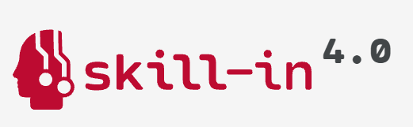
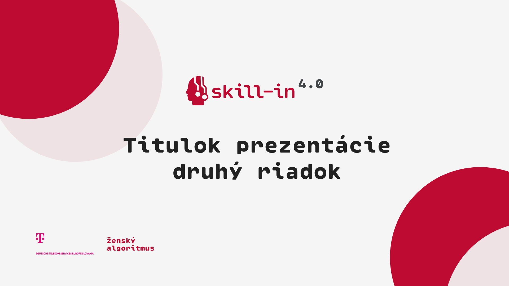
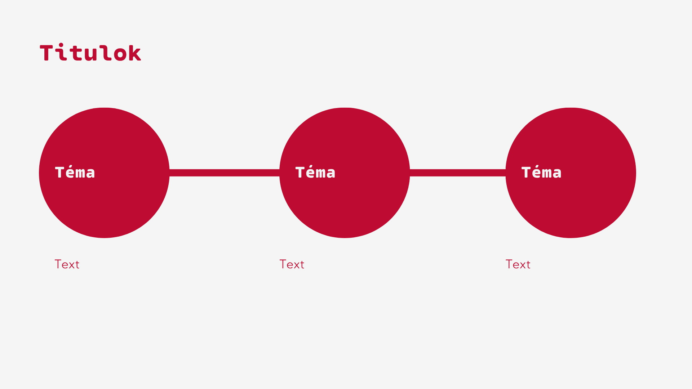
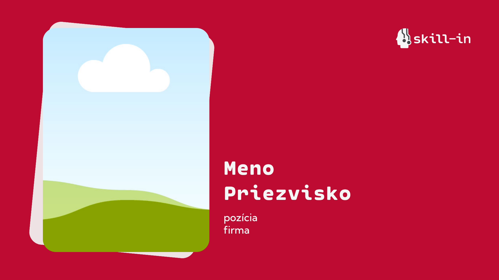
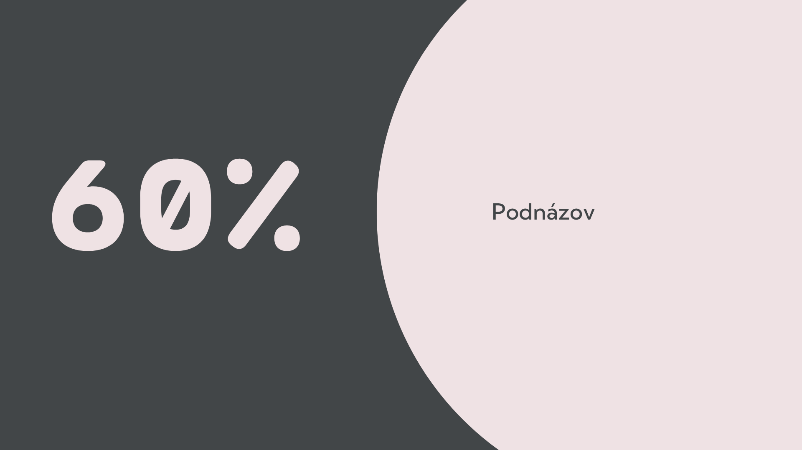
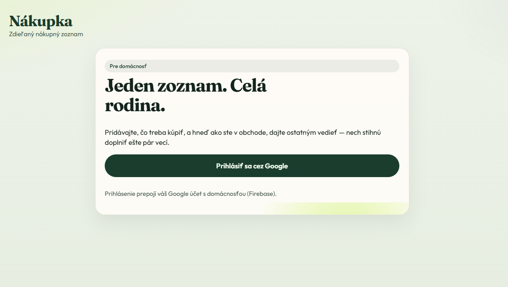
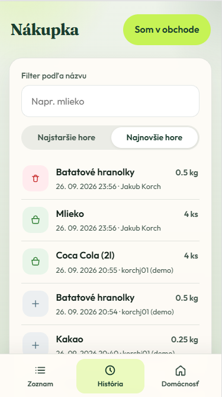
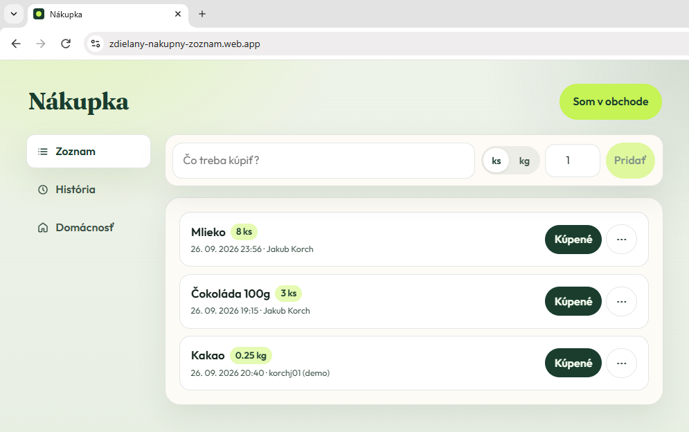
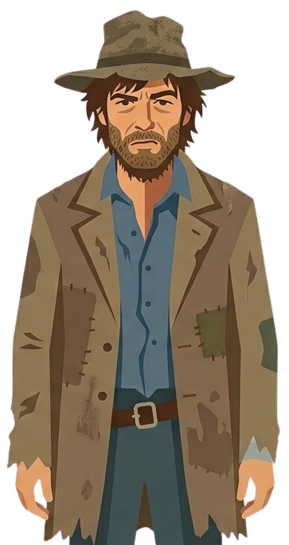

Ako si vytvoriť užitočnú aplikáciu — aj keď nie si programátorka
Naskenuj QR kód a zapíš sa na prezenciu
Senior Technical Consultant
Bloomreach
Vibe coding v praxi
Definíciu, nástroje, 2 príklady a ako na to
Detailný kurz programovania
Vibe coding = spôsob vývoja softvéru, pri ktorom popisuješ zámer a správanie produktu bežným jazykom a umelá inteligencia* (AI) píše a upravuje kód. Ťažisko práce sa posúva z písania syntaxe na zadávanie, overovanie a rozhodovanie.
Pojem spopularizoval Andrej Karpathy (2025) — kóduješ skôr rozhovorom než riadok po riadku.
* AI (Artificial Intelligence) — softvér, ktorý sa učí z veľkého množstva textu a vie odpovedať alebo tvoriť obsah (vrátane kódu).
Popíš čo, pre koho a čo musí fungovať
Nechaj AI navrhnúť a napísať
Spusti, skús, oprav pokynom — opakuj
zámer → generovanie → cyklus spätnej väzby
„AI je ako geniálny, trochu spoločensky neohrabaný pomocník: vie veľa, ale často nevie, čo z toho je pre teba naozaj dobré. Ty zadávaš smer a overuješ výsledok.“
Mini-metafora na vibe coding
LLM* — Large Language Model (veľký jazykový model). Softvér, ktorý sa učí z obrovského množstva textu a vie generovať odpovede a kód.
ChatGPT, Claude (web), Gemini
ChatGPT je AI, s ktorou sa rozprávaš o probléme. Codex (a podobné) je AI, ktorú poveríš, aby ten problém v kóde reálne vyriešila.
ChatGPT · Claude chat · Gemini
Codex · Claude Code · Cursor agent
AI agent* — AI (Artificial Intelligence) nastavená tak, aby v projekte sama robila kroky (čítať súbory, meniť kód, spúšťať príkazy), nielen písať odpoveď do chatu.
Rozhovor v prehliadači. Skvelé na malé veci a náhľad.
AI zameraná na prácu so súbormi projektu.
Editor ako VS Code + AI hneď po inštalácii, plynulo zabudovaná.
Plnohodnotné IDE*. AI nie je natívne jadro (ide cez doplnky).
IDE* — Integrated Development Environment (integrované vývojové prostredie). Editor kódu s nástrojmi na spúšťanie, ladenie a správu projektu.
Git* — systém na sledovanie zmien v súboroch; umožňuje vrátiť sa späť a spolupracovať na kóde.
Živá ukážka: náhľad v ChatGPT + Chrome rozšírenie z Cursora
Chcem jednoduchú webovú appku na prácu s dátumami a časmi. Urob ju ako JEDEN súbor HTML (CSS + JS vnútri), ktorý pôjde spustiť priamo v prehliadači. Na konci mi ukáž aj preview / canvas, ak vieš. ČO MUSÍ VEDIEŤ: 1) Countdown / „koľko zostáva“ - zadám cieľový dátum a čas - appka ukáže, koľko zostáva: dni, hodiny, minúty, sekundy - výsledok sa aktualizuje každú sekundu - ak cieľ už prešiel, ukáž jasne „Termín už uplynul“ + ako dávno (nie záporné mätúce čísla) 2) Rozdiel medzi dvoma dátumami - dve polia: Od (dátum + čas) a Do (dátum + čas) - vypočítaj absolútny rozdiel: dni, hodiny, minúty, sekundy - ukáž aj celkový súčet v hodinách a v dňoch (desatinné, 2 desatinné miesta) - tlačidlo „Vymeniť Od ↔ Do“ JAZYK A UI: - celá appka v slovenčine - čistý, prehľadný layout; mobil aj desktop - dva jasne oddelené režimy / karty: „Do termínu“ a „Rozdiel dátumov“ - predvyplň rozumné defaulty (napr. cieľ = o týždeň o 12:00; Od = teraz, Do = o 3 dni) - validácia: chýbajúci dátum, neplatný vstup — zrozumiteľná chybová hláška - žiadne externé knižnice, žiadny backend, žiadne API kľúče TECHNICKY: - jeden súbor index.html - nativní datetime-local inputy - výpočty v lokálnom čase prehliadača (nie UTC zmätok pre používateľa) - krátky komentár hore v HTML, čo appka robí NA KONCI ODPOVEDI: 1) celý kód v jednom bloku 2) krátky návod: ako to uložiť a otvoriť 3) ak vieš, spusti / ukáž preview priamo v chate NEPRIDÁVAJ: login, databázu, dark mode toggle navyše, animácie navyše, marketing texty.
Vytvor Chrome extension (Manifest V3) — jednoduchú utilitu na dátumy a časy. Všetky súbory vytvor priamo v tomto projekte, pripravené na načítanie cez chrome://extensions (Load unpacked). CIEĽ PRODUKTU: Popup extension (ikona v toolbare), slovenská UI, bez backendu. FUNKCIE: 1) Režim „Do termínu“ - datetime-local: cieľový dátum + čas - live countdown: dni, hodiny, minúty, sekundy (update každú 1 s) - ak termín prešiel: „Termín už uplynul“ + ako dávno - zapamätaj posledný cieľový dátum v chrome.storage.local 2) Režim „Rozdiel dátumov“ - Od + Do (dátum + čas) - rozdiel: dni, hodiny, minúty, sekundy - navyše: celkovo hodín a dní (2 desatinné miesta) - tlačidlo Vymeniť Od ↔ Do - tlačidlo Skopírovať výsledok do schránky SÚBORY (minimálne): - manifest.json (MV3, názov napr. „Dátumová kalkulačka“, action.default_popup, ikony) - popup.html - popup.css - popup.js - icons/ (vygeneruj jednoduché SVG alebo PNG 16/32/48/128 — aj placeholder je OK, ale cesty v manifeste musia sedieť) - README.md s návodom: ako nainštalovať Load unpacked + krátky popis funkcií UI: - popup šírka ~360px, čitateľné, 2 taby/sekcie - žiadne externé CDN, žiadne build tool (čisté HTML/CSS/JS) - predvyplnené defaulty; validácia vstupov po slovensky KVALITA: - čistý kód, žiadny mŕtvy kód - permissions len čo treba (storage); nežiadať host permissions ani tabs ak netreba - po dokončení vypíš zoznam vytvorených súborov a 3 kroky inštalácie NESMIEŠ: - React/Vite/npm setup - analytics, login, sync na server - zbytočné features mimo zadania Začni vytvorením štruktúry súborov a hotovej funkčnej verzie, ktorú viem hneď načítať v Chrome.
„Vibe nakódiť sa dá čokoľvek“
ja




PWA* — Progressive Web App (progresívna webová aplikácia). Webová stránka, ktorú si vieš nainštalovať do telefónu a používať podobne ako bežnú appku.
Chcel by som vytvoriť aplikáciu na sledovanie a zdieľanie nákupného zoznamu medzi členmi mojej rodiny. Nie som vývojár, ale chcem túto aplikáciu vibe-codovať. Aplikácia má fungovať predovšetkým na telefónoch s Androidom, ale má byť dostupná aj ako webová stránka. Nechcem vyvíjať dve rôzne aplikácie, takže potrebujem tvoju radu, ktoré technológie použiť. Potrebujem to aj niekde nasadiť na „internet“ zadarmo, takže mi daj aj možnosti na to. Najdôležitejšie: keďže nie som programátor, prosím analyzuj túto požiadavku, ako keby si bol malý tím IT profesionálov alebo full-stack vývojár, a priprav optimálnu architektúru — nekóduj to hneď ako jeden veľký balík kódu — aplikuj best practices, ale snaž sa to udržať aj jednoduché. Toto je len MVP.
Jednoducho: otvoríš stránku (alebo appku v telefóne) → prihlásiš sa Google → rodina zdieľa jeden živý zoznam v cloude.
Poďme teraz vytvoriť samotnú aplikáciu. S ohľadom na doterajšie informácie, ktoré máš, mi navrhni aplikáciu tak, aby fungovala prioritne na mobilných zariadeniach - responzívny dizajn - ale aby dobre vyzerala aj ako webová stránka. Keď budeš mať kód pripravený, uveď mi kroky ako aplikáciu otestovať na mojom počítači, kde ju momentálne vyvíjame a následne aj na mobilnom telefóne.
Etapa: z nápadu vznikne niečo, čo už vidíš a klikaš — ešte nie „ostrá“ prevádzka, ale reálne rozhranie.
Aplikáciu som otestoval na PC… Prišiel som na nedostatky: 1) chýba množstvo (ks / kg). 2) chcem vidieť, kto a kedy pridal položku. 3) záložka História — pridané aj odobrané. 4) možnosť upraviť položku. 5) na mobile tlačidlo Pridať vytŕčalo. 6) na mobile spodná navigácia ako v mobilnej appke; na PC môže vyzerať ako web.
Etapa: po prvom vyskúšaní prichádzajú konkrétne požiadavky „z života“ — AI ich dopíše do appky.
OK, teraz už všetko vyzerá v poriadku po dizajnovej a vzhľadovej stránke. Teraz potrebujem aby už aplikácia fungovala naozaj a nielen v demo režime. Potrebujeme ju prepojiť s tými google službami, ktoré si na začiatku zadefinoval.
Etapa: z lokálnej hračky sa stáva skutočná appka, ktorú môžu používať viacerí ľudia naraz.
OK, potrebujeme opraviť rozoznávanie profilu po prihlásení. Aplikácia by si mala pamätať prihláseného používateľa… ak už patrí do domácnosti, načítaj ju automaticky. 2) Pozvánky: zakladateľ vloží Google e-mail člena; ten potvrdí alebo odmietne. Bez unikátneho kódu — len cez pozvanie.
Etapa: appka prestáva byť „pre jedného“ — stáva sa nástrojom pre celú domácnosť.
Poďme nasadiť aplikáciu na firebase hosting, aby sme mali jednotnú URLku a mohli testovať notifikácie. Nastav čo treba nastaviť a veď ma prosím krokmi, čo mám urobiť, nahrať, skopírovať a podobne.
Etapa: už to nie je len na tvojom PC — rodina otvorí jednu URL a môže nakupovať spolu.
čas kódenia
Od nápadu k nasadenej PWA.
Nie „bez námahy“ — ale úplne iné tempo než klasický projekt od nuly, keď nie si programátorka.



FCM* — Firebase Cloud Messaging. Služba na push upozornenia do telefónu / prehliadača aj keď appka nie je otvorená.
pomenuj technológie a limity (bezplatný tarif, PWA, slovenské rozhranie…)
daj príklad dát / náčrt očakávania
zakáž AI pridávať svojvoľne funkcie navyše
keď sa zasekneš: zúž problém, pridaj výpisy, vráť sa o krok
slepé kopírovanie bez spustenia
ignorovanie chýb
5 nových funkcií v jednom pokyne
chýbajúca definícia „hotovo“
Technický dlh* — rýchle riešenia, ktoré neskôr stoja čas na opravy, údržbu alebo prepracovanie.

→ extrém 95/5
Pravidlo 80/20: približne 80 % výsledku získaš za 20 % času — a naopak, zvyšných 20 % často zoberie väčšinu práce.
Pri vibe codingu to vie ísť až do extrému 95/5: AI sa zasekne na drobnosti a neprogramátor strávi hodiny niečím, čo programátor opraví ručne za 30 sekúnd.
Ty zadáš zámer, AI píše kód — a ty to kontroluješ
Na drobnosť stačí konverzačné AI; na väčší projekt skôr AI agent
Nástroje sú spektrum — od chatu až po plný editor
Jasné zadanie, malé kroky, overenie — a nezasekni sa na drobnostiach
Otázky?